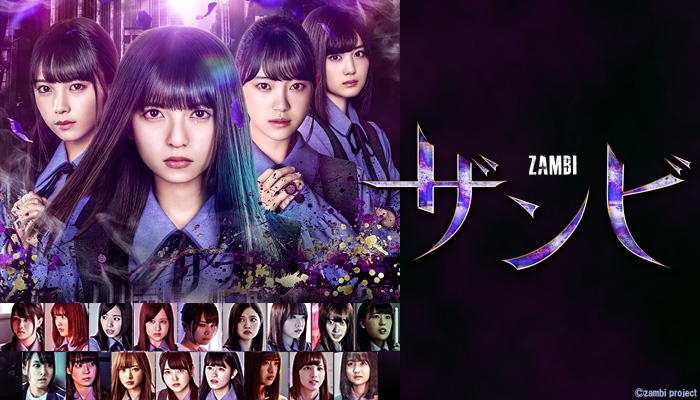

乃木坂46出演の本格ホラー作品
舞台は全寮制の高校フリージア学園。
修学旅行からの帰り道で、突然バスが故障してしまう。そこで生徒たちはグループに分かれて、連絡を取れる場所を探していた。そこで偶然通りかかった村の日本家屋で一夜を過ごすこととなる。次の日の朝、主人公の山室楓が目を覚ますとそこには一緒にいたクラスメイトの姿がなかった。
クラスメイトを探す楓は村で奇妙な光景を目にする。人ひとりいない村、池にある逆さまに置かれた神社の鳥居、そこで彼女は記者である守口と出会う。
友人たちの声が聞こえ、二人は神社に行くとそこには写真撮影などをする楓のクラスメイトの姿があった。守口の言葉で皆、行動を止めたものの、楓の幼馴染である亜須未は刺さっていた風車を持って帰ってきてしまう。
その後、無事に学校に帰ってくることができたのだが、これから学園で起こる悲劇その時は決まってあの風車が勝手に回り始める。
「7日間で私たちはこの世界からいなくなった」この言葉の意味とは、なぜこのような事件が起きてしまったのか、そして「ザンビ」とは何者なのか。
すべてを知ったときあなたはなにを思うだろう。もしもの時あなたは友達を助けることはできますか？それとも・・・
ただのホラーではなくヒューマンドラマとしても楽しめる作品となっています。
主要キャスト
山室楓・・・齋藤飛鳥
諸積実乃梨・・・堀未央奈
甲斐聖・・・与田祐希
西条亜須未・・・秋元真夏
守口琢磨・・・片桐仁
主題歌
もうすぐ～ザンビ伝説～
トップページに戻る